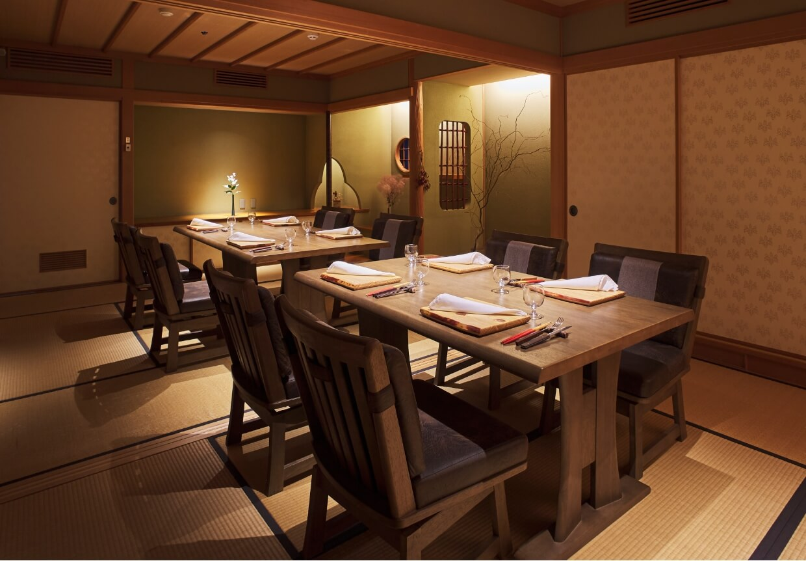
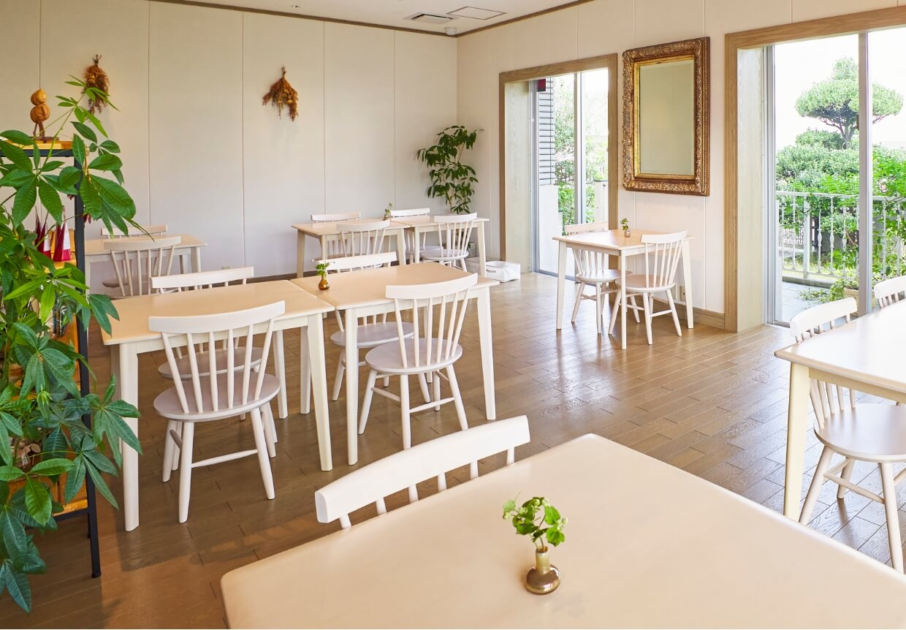

Information
店舗情報
テーブル席を18席のほか、
4名以上、
最大8名での大切な人との
各種シーンにご利用いただける
個室をご用意しております。
最大18名で貸切利用もできますので
ご相談ください。
個室のみの室料
小学生以上 お一人様につき ¥550
前日までのご予約／お時間は2時間制／
4名様以上最大8名様
Room charge for private rooms only


店舗情報
Store Information
| 店舗名 | 島 Cuisine あーすん |
| 料理長 | 小林 拓真 |
| 所在地 | 日本 〒901-0155 沖縄県那覇市金城５丁目１３−５ |
| アクセス | ゆいレール 小禄駅 徒歩3分／ 赤嶺駅 徒歩10分 |
| 駐車場 |
3台 満車の際は有料駐車場のご利用をお願いします。(徒歩2~3分程度) 1.チャビラホテル那覇 2.小禄パーキング |
| 電話番号 | 098-851-5360 |
| 営業日時 |
月:11:00-16:00 水:11:00-16:00 木:11:00-16:00 金:12:00-15:00, 18:30-23:00 土:12:00-15:00, 18:30-23:00 |
| 定休日 | 月曜日、日曜日 |
Access
アクセス
〒901-0155 沖縄県那覇市金城5丁目13-5
ゆいレール 小禄駅 徒歩3分／
赤嶺駅 徒歩10分

コースは前日までの予約が必要となります。
お電話にてご予約くださいませ。
お電話でのお問い合わせ
098-851-5360